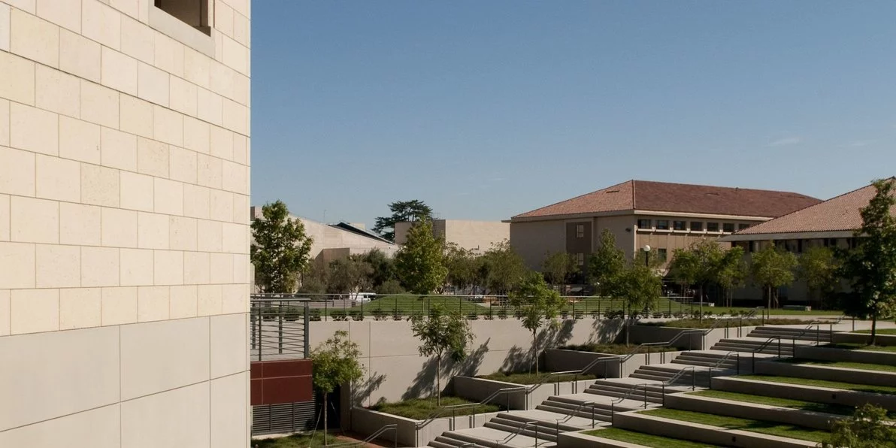

硕士项目
Master of Science in Sustainable Design & Construction (可持续设计与建筑硕士)
Stanford University（斯坦福大学）
School of Engineering & Doerr School of SustainabilityCivil & Environmental Engineering（工程学院 & Doerr可持续性学院 土木与环境工程系）
可持续设计 建筑 环境工程 能源效率 建筑信息模型 项目管理 生命周期评估
项目概述
该项目旨在为建筑环境的职业生涯做准备，包括研究、设计、建造和管理可持续建筑和基础设施，以最大化其生命周期经济价值以及对环境和社会功能和服务的净贡献。课程涵盖了诸如嵌入“智能”建筑和基础设施的传感器网络等尖端信息技术，以及全球范围内的基础设施开发的微观和宏观战略，以及创业和组织设计新业务，以及旨在提高建筑环境可持续性的公司或政府倡议。
项目时长
1年（3个学期）
网页链接
https://cee.stanford.edu/academics-admission/graduate/phd-and-masters-degree-programs/sustainable-design-construction#SDCSUS
